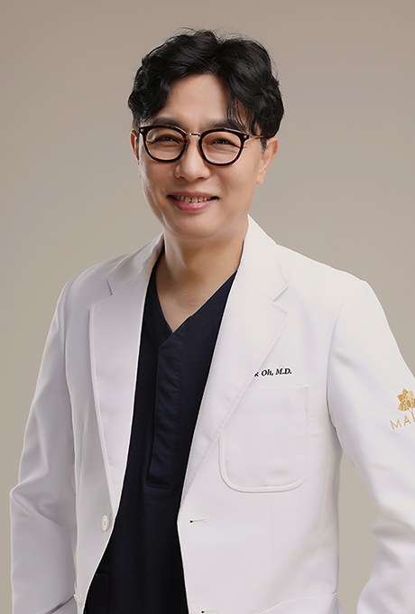
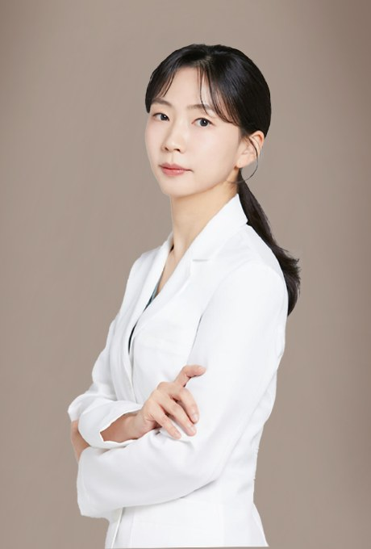

医生
医生介绍
本院所有项目均由医生面诊后决定是否进行以及如何组合。

Kim Mi-jin김미진
院长 · 媄琳医院 The Hyundai Seoul店
经历
- 专科医师首尔峨山医院（Asan Medical Center）
- 曾任Yonsei Ro 医疗医院 皮肤科 院长
- 曾任Yonsei Line 医院 院长
学会
- 会员大韩激光皮肤毛发学会
- 会员大韩美容整形激光医学会
- 会员大韩肥胖美容学会
主要领域
激光皮肤治疗、提升、肉毒素注射、填充注射